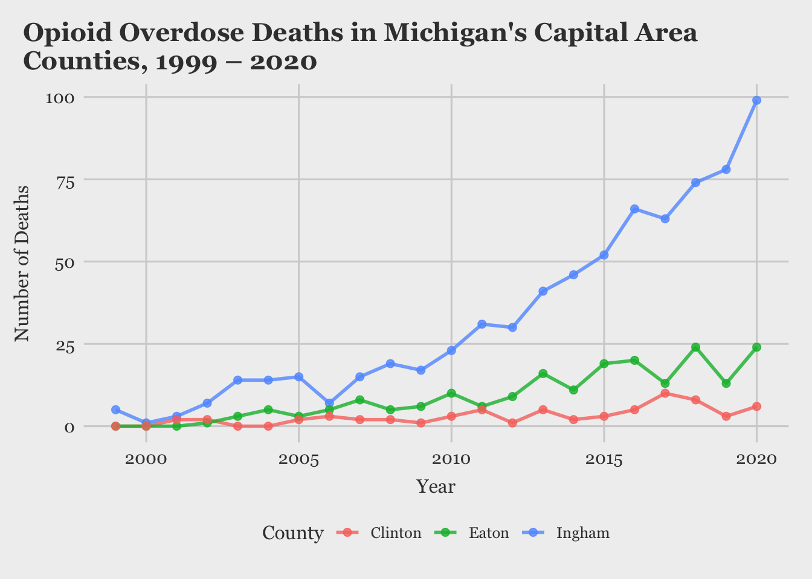

library(tidyverse)
library(ggthemes)
library(readxl)
library(plotly)Introduction
Over the summer, I took a course on public health surveillance. As a culminating project, we were tasked with creating original data visualizations for a fact sheet on a topic of our choosing. I chose to examine local opioid overdose and mortality data for my project.
This is a topic that is near to me. The opioid crisis has impacted many communities across the country. At this point, the topic is well known to most people. Despite awareness, overdoses are still rising.
In the following post, I will demonstrate how easily you can spice up basic ggplot graphics. In particular we will look at:
a basic ggplot2 line chart
ggthemes we can use to make a more professional looking figure
and a brief glimpse at plotly (because interactive graphs are so cool!)
Data Prep
To begin, we will load in our libraries. Be sure to install them if you haven’t already.
Next, we will read in our data using readxl. The data I am using comes from the Michigan Substance Use Disorder Data Repository (SUDDR). You can download the data yourself here. Keep in mind that the numbers we are working with in this example are raw counts of opioid overdose deaths by county, NOT rates. Therefore, we should not compare these counties against each other without considering population size differences. I’m interested in looking at changes over time with this dataset.
Because I’m focusing on the three counties in my area, I’m going to create a vector with the names of the capital area counties. This will make subsetting the data a little easier.
opdeaths <- read_xlsx("Opioid Overdose Deaths.xlsx")
counties <- c("Ingham", "Eaton", "Clinton")Time to Plot!
From here, we can start our first plot. I will select my target counties using the filter() function that comes from the dplyr package. Be sure to specify which aesthetics you want to plot on the respective axes. Here we are putting the variable Year on the x-axis and Opioid Overdose Deaths on the y.
opdeaths %>%
filter(County %in% counties) %>%
ggplot(aes(x = Year, y = `Opioids Overdose Deaths`)) +
geom_line()
Oh no! What happened? We didn’t tell ggplot which lines we wanted to see. It is important that within the layer geom_line() we specify that we want to plot different lines based on our county variable. To do this, we simply add an aes() layer and assign color to County.
opdeaths %>%
filter(County %in% counties) %>%
ggplot(aes(x = Year, y = `Opioids Overdose Deaths`)) +
geom_line(aes(color = County))That looks a lot better! But we can do more. The lines look a bit skinny to me. I would like them to stand out more. It also might help to adjust the opacity of the lines. This can make points that cross over easier to read. To make these changes, we can specify linewidth and alpha in geom_line() outside of the aes() argument.
I think it would be great to add points to our plot, too. Like the geom_line() layer, I want these to be large enough and overlap easily. I will pass through similar arguments in the geom_point() layer, also specifying the color.
opdeaths %>%
filter(County %in% counties) %>%
ggplot(aes(x = Year, y = `Opioids Overdose Deaths`)) +
geom_line(linewidth = 1, alpha = 0.8, aes(color = County)) +
geom_point(size = 2, alpha = 0.8, aes(color = County))Lastly, I want to add labels and theme to really polish up our plot. This is surprisingly easy! To add our labels, we add another layer called labs(). Here we can add a proper title, and more accurate labels for the axes.
Adding a theme is even easier. We can quickly add on a layer and pick a theme that we like. For my example, I’m using the fivethirtyeight theme that comes from ggthemes. Be sure to check out the other options available in this package.
After our theme_fivethrityeight() layer, I’m adding a general theme() layer to specify that I want all my main title and axes titles to be shown. I am also adjusting the text size to make the title a bit more readable.
opdeaths %>%
filter(County %in% counties) %>%
ggplot(aes(x = Year, y = `Opioids Overdose Deaths`)) +
geom_line(linewidth = 1, alpha = 0.8, aes(color = County)) +
geom_point(size = 2, alpha = 0.8, aes(color = County)) +
labs(title = "Opioid Overdose Deaths in Michigan's Capital Area \nCounties, 1999 – 2020",
x = "Year",
y = "Number of Deaths") +
theme_fivethirtyeight() +
theme(plot.title = element_text(size = 16),
plot.title.position = "plot",
axis.title = element_text(size = 12),
axis.text = element_text(size = 11),
axis.title.y = element_text(vjust = +3),
axis.title.x = element_text(vjust = -0.75),
text = element_text(family = "Georgia"),
plot.margin = unit(c(1, 1, 1, 1), "lines"))
And just like that, we have a very nice looking line chart!
A Glimpse of Plotly
Next I want to briefly show how easy it is to take a basic ggplot figure and make it interactive with the amazing package plotly. If I save the figure we created before as an object, we can pass it through the function ggplotly(), and as a result, we get a chart where we can zoom in and hover over points to gain more insight. I will demonstrate this below.
p1 <- opdeaths %>%
filter(County %in% counties) %>%
ggplot(aes(x = Year, y = `Opioids Overdose Deaths`)) +
geom_line(linewidth = 1, alpha = 0.8, aes(color = County)) +
geom_point(size = 2, alpha = 0.8, aes(color = County)) +
labs(title = "Opioid Overdose Deaths in Michigan's Capital Area Counties, 1999 – 2020",
x = "Year",
y = "Number of Deaths") +
theme_fivethirtyeight() +
theme(plot.title = element_text(size = 16),
plot.title.position = "plot",
axis.title = element_text(size = 12),
axis.text = element_text(size = 11),
axis.title.y = element_text(vjust = +3),
axis.title.x = element_text(vjust = -0.75),
text = element_text(family = "Georgia"),
plot.margin = unit(c(1, 1, 1, 1), "lines"))
ggplotly(p1)It’s amazing how quickly you can produce interactive charts with R! The output from this function in an html widget. So it can easily be viewed on a website or a local html file. This makes it ideal for sharing graphics quickly among coworkers.
For my project, I created a few more graphics with the same color palette and arranged them on a pdf for easy distribution. If you want to view the finished product you can find that here.
I hope you found this post helpful. Next time I want to focus more on plotly demonstrating its capabilities with spatial data analysis. Until next time!